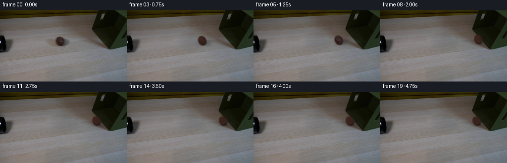
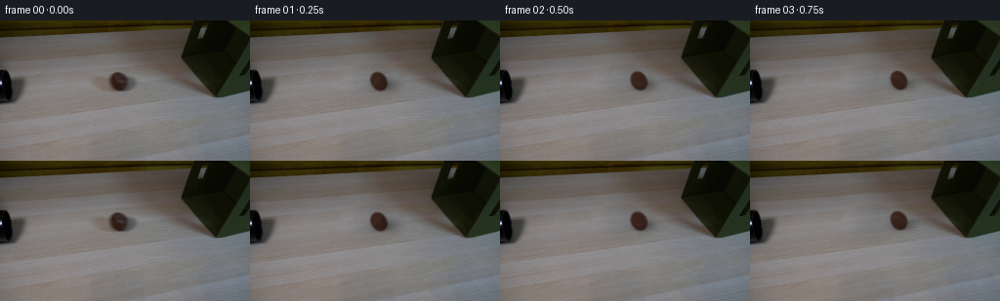
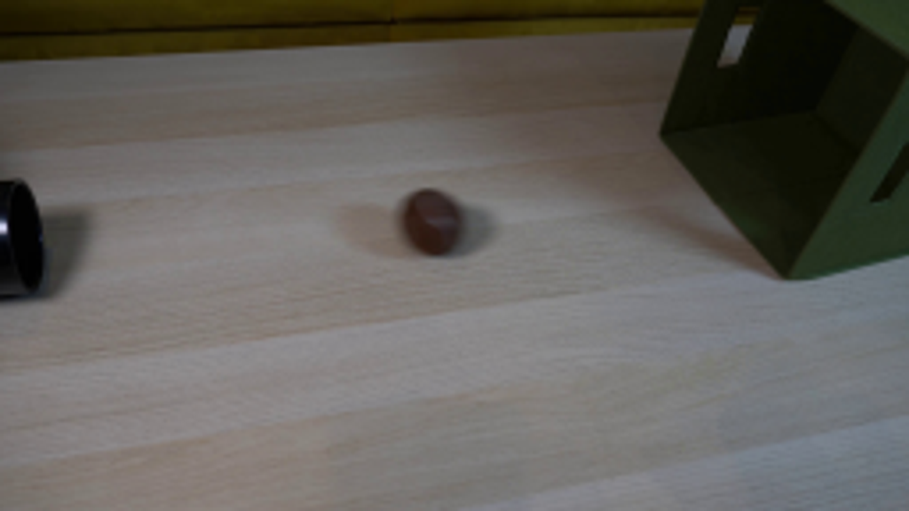
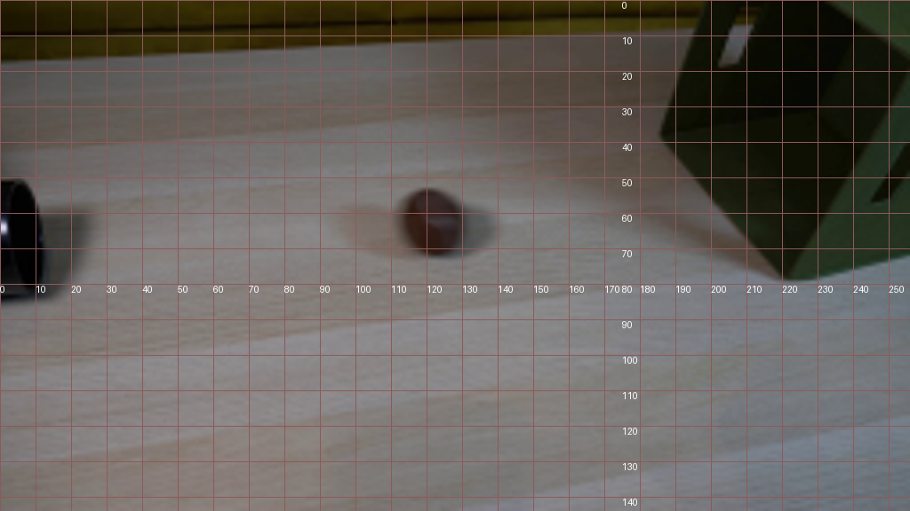
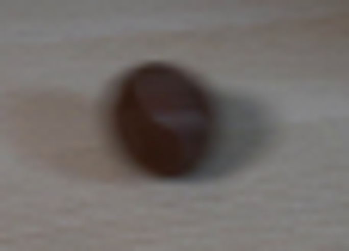
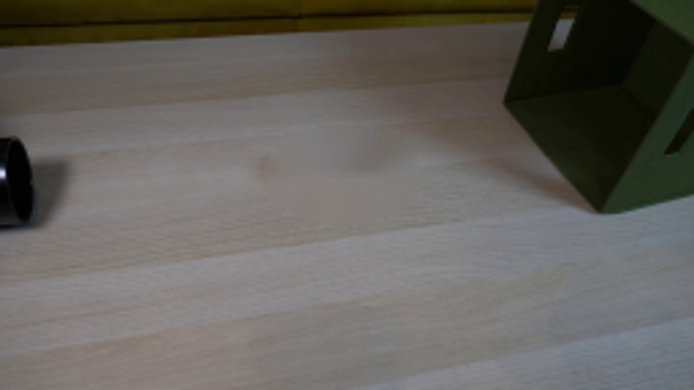
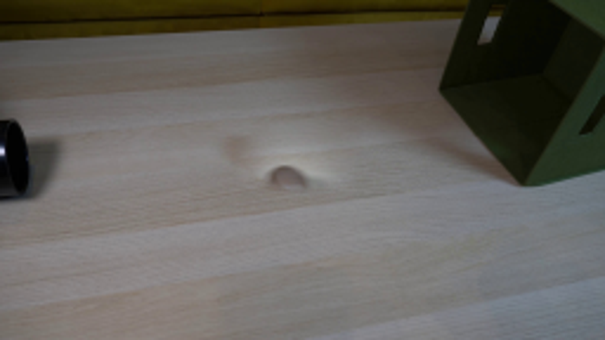
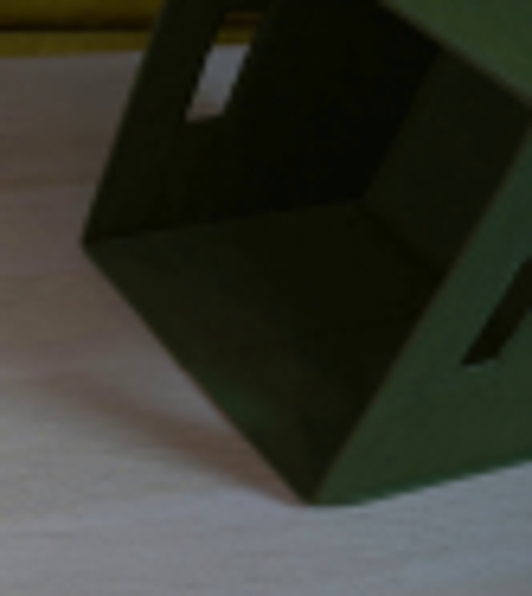
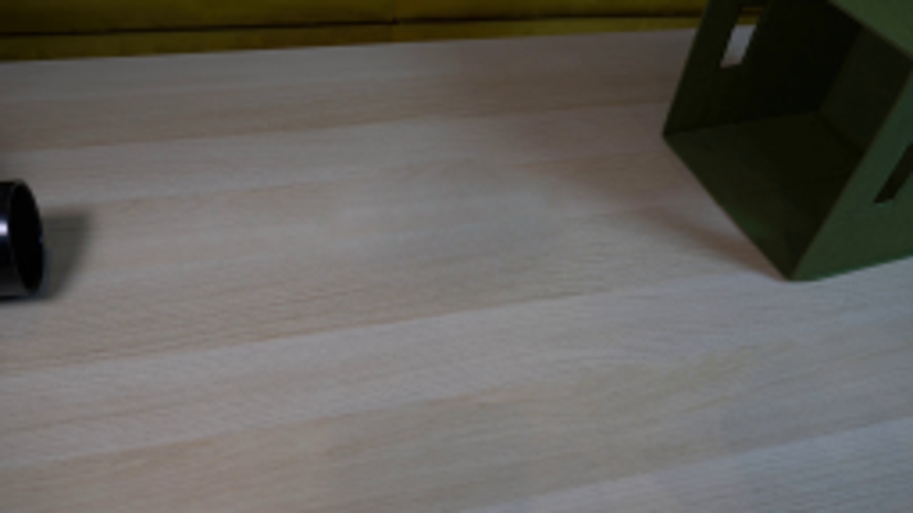
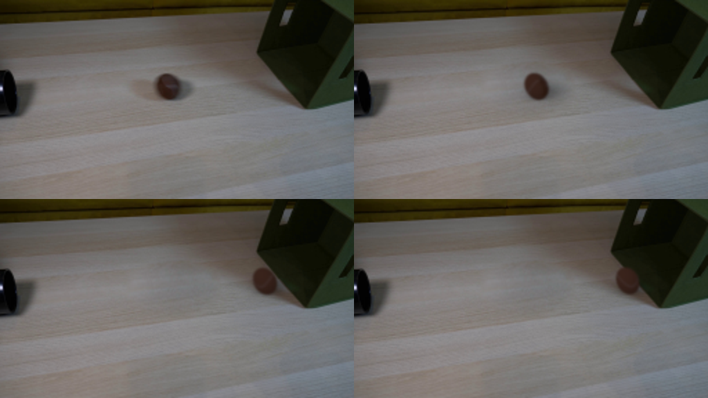

CODING AGENTS AS PIXEL WORLD MODELS
traex/GPT-6.1-Sol · 0151
点击播放 · 原生 RGB 像素
逐轮保存的候选
回放视频、检查图与代码变化。
每份候选均可单独播放。实际图片检查记录在下方工具轨迹中。
候选 01播放与检查图
点击播放 · 原生 RGB 像素

展开代码变化
--- 上一保存版本
+++ 本次保存版本
@@ -0,0 +1,145 @@
+from pathlib import Path
+import numpy as np
+import cv2
+from PIL import Image
+import artifact_io
+
+ROOT=Path(__file__).resolve().parent
+W,H=256,144
+
+def clean_plate(image):
+ """Continue the local tabletop grain across the small foreground occlusion."""
+ im=image.astype(np.float64)
+ yy,xx=np.indices((H,W))
+ r=np.sqrt(((xx-125)/33.5)**2+((yy-64)/21.5)**2)
+ donor=cv2.remap(im.astype(np.float32),(xx-60).astype(np.float32),(yy+8.5).astype(np.float32),cv2.INTER_CUBIC)
+ ring=(r>1.02)&(r<1.32)
+ x=(xx-125)/30.;y=(yy-64)/25.
+ basis=np.stack([np.ones_like(x),x,y,x*x,x*y,y*y],-1)
+ coeff=np.linalg.lstsq(basis[ring],(im-donor)[ring],rcond=None)[0]
+ donor=donor+np.einsum('hwk,kc->hwc',basis,coeff)
+ a=np.clip((1.12-r)/.28,0,1);a=a*a*(3-2*a)
+ return np.clip(im*(1-a[...,None])+donor*a[...,None],0,255).astype(np.float32)
+
+CX,CY=121.1,62.6
+RX,RY=8.55,9.65
+
+def sphere_source(image,plate):
+ # Isolate the measured matte surface; the fixed illumination is retained.
+ yy,xx=np.indices((H,W),dtype=np.float32)
+ u=(xx-CX-.17*(yy-CY))/RX;v=(yy-CY)/RY
+ radius=np.sqrt(u*u+v*v)
+ a=np.clip((1.06-radius)/.19,0,1)
+ fg=(image-(1-a[...,None])*plate)/np.maximum(a[...,None],.12)
+ z=np.sqrt(np.maximum(1-u*u-v*v,0))
+ illumination=.78+.15*z-.09*v-.07*u
+ tex=fg/illumination[...,None]
+ return np.clip(tex,15,110).astype(np.float32)
+
+
+def draw_ball(plate,texture,cx,cy,angle,speed,compression=1.):
+ out=plate.copy()
+ yy,xx=np.indices((H,W),dtype=np.float32)
+ # Large soft penumbra follows the ball, with a tighter contact occlusion.
+ sx=xx-(cx+6.4);sy=yy-(cy+3.7)
+ shadow=.31*np.exp(-.5*((sx/8.5)**2+(sy/4.3)**2))
+ shadow+=.12*np.exp(-.5*(((xx-(cx+1.2))/5.9)**2+((yy-(cy+8.2))/1.35)**2))
+ # The shadow is absorbed naturally into the dark fabric on impact.
+ out*=1-shadow[...,None]
+ L=30;S=4
+ x0=int(np.floor(cx))-L//2;y0=int(np.floor(cy))-L//2
+ iy,ix=np.indices((L*S,L*S),dtype=np.float32)
+ dx=x0+(ix+.5)/S-.5-cx;dy=y0+(iy+.5)/S-.5-cy
+ u=(dx-.17*dy)/(RX*compression);v=dy/RY
+ q=u*u+v*v
+ alpha=(q<=1).astype(np.float32)
+ z=np.sqrt(np.maximum(1-q,0))
+ # Rotate the material over the sphere about the rolling axle.
+ ct=np.cos(angle);st=np.sin(angle)
+ tx=ct*u-st*z
+ tz=st*u+ct*z
+ ty=v
+ phi=np.arctan2(tx,tz)
+ lat=np.arcsin(np.clip(ty,-1,1))
+ dist=lat-.46*np.sin(2*phi+.1)
+ seam=np.exp(-.5*(dist/.057)**2)
+ base=np.zeros((*q.shape,3),np.float32)+np.array([59.,36.,28.])
+ base+=seam[...,None]*np.array([12.,17.,23.])
+ # Use the first-frame felt texture on the originally visible hemisphere.
+ texx=(CX+RX*tx+.17*RY*ty).astype(np.float32)
+ texy=(CY+RY*ty).astype(np.float32)
+ sampled=cv2.remap(texture,texx,texy,cv2.INTER_LINEAR,borderMode=cv2.BORDER_REFLECT_101)
+ blend=np.clip((tz-.37)/.32,0,1)
+ blend=blend*blend*(3-2*blend)
+ material=sampled*blend[...,None]+base*(1-blend[...,None])
+ light=.78+.15*z-.09*v-.07*u
+ rgb=material*light[...,None]
+ # Small high-frequency felt variation, kept coherent as it rolls.
+ grain=.60*np.sin(97*tx+59*ty)*np.sin(119*ty-31*tz)
+ rgb+=grain[...,None]
+ pm=rgb*alpha[...,None]
+ blur=0.72*S
+ pm=cv2.GaussianBlur(pm,(0,0),blur)
+ alpha=cv2.GaussianBlur(alpha,(0,0),blur)
+ pm=cv2.resize(pm,(L,L),interpolation=cv2.INTER_AREA)
+ alpha=cv2.resize(alpha,(L,L),interpolation=cv2.INTER_AREA)
+ # Short real-time shutter blur aligned to the straight rolling trajectory.
+ smear=min(abs(speed)*.012,0.60)
+ if smear>.1:
+ M=np.float32([[1,0,smear],[0,1,-smear*.052]])
+ M2=np.float32([[1,0,-smear],[0,1,smear*.052]])
+ pm=.5*pm+.25*cv2.warpAffine(pm,M,(L,L))+.25*cv2.warpAffine(pm,M2,(L,L))
+ alpha=.5*alpha+.25*cv2.warpAffine(alpha,M,(L,L))+.25*cv2.warpAffine(alpha,M2,(L,L))
+ ys=slice(y0,y0+L);xs=slice(x0,x0+L)
+ out[ys,xs]=out[ys,xs]*(1-alpha[...,None])+pm
+ return np.clip(out,0,255)
+
+
+def trajectory(t):
+ speed=42.
+ friction=2.3
+ impact_x=197.9
+ dist=impact_x-CX
+ tc=(speed-np.sqrt(speed**2-2*friction*dist))/friction
+ if t<=tc:
+ displacement=speed*t-.5*friction*t*t
+ velocity=speed-friction*t
+ x=CX+displacement
+ compress=1.
+ else:
+ s=t-tc
+ rebound=6.7
+ drag=6.2
+ elapsed=min(s,rebound/drag)
+ x=impact_x-rebound*elapsed+.5*drag*elapsed**2
+ velocity=-max(rebound-drag*s,0)
+ compress=1-.042*np.exp(-(s/.14)**2)
+ y=CY-(x-CX)*.052
+ angle=(x-CX)/RX
+ return x,y,angle,velocity,compress,tc
+
+
+def main():
+ image=np.array(Image.open(ROOT/'first_frame.png').convert('RGB'))
+ plate=clean_plate(image)
+ texture=sphere_source(image.astype(np.float32),plate)
+ frames=[image.copy()]
+ yy,xx=np.indices((H,W),dtype=np.float32)
+ for i in range(1,20):
+ t=i/4
+ x,y,theta,v,c,tc=trajectory(t)
+ bg=plate.copy()
+ s=t-tc
+ if s>0:
+ # A small, damped give of the cloth panel at the point of contact.
+ impulse=.75*np.exp(-s/.27)*np.sin(np.pi*min(s/.22,1.8))
+ falloff=np.exp(-.5*(((xx-207)/14)**2+((yy-59)/15)**2))
+ bg=cv2.remap(bg,(xx-impulse*falloff).astype(np.float32),(yy-.15*impulse*falloff).astype(np.float32),cv2.INTER_CUBIC)
+ frame=draw_ball(bg,texture,x,y,theta,v,c)
+ frames.append(np.rint(frame).astype(np.uint8))
+ frames=np.stack(frames)
+ artifact_io.save(frames,ROOT)
+ assert np.array_equal(frames[0],image)
+
+if __name__=='__main__':
+ main()
候选 02播放与检查图
点击播放 · 原生 RGB 像素

展开代码变化
--- 上一保存版本
+++ 本次保存版本
@@ -98,7 +98,7 @@
def trajectory(t):
speed=42.
friction=2.3
- impact_x=197.9
+ impact_x=193.4
dist=impact_x-CX
tc=(speed-np.sqrt(speed**2-2*friction*dist))/friction
if t<=tc:
可观测工具轨迹
实际执行的命令与返回图片。
命令 1exit 0
/bin/bash -lc "ls -la && cat prompt.txt && printf '\\n---RULES---\\n' && cat GENERATION_RULES.md"
命令 2exit 0
/bin/bash -lc "cat artifact_io.py && python - <<'PY'
from PIL import Image
im=Image.open('first_frame.png'); print(im.size); im.resize((1024,576)).save('.tmp/enlarged.png')
PY"命令 3exit 0
/bin/bash -lc "python - <<'PY'
from PIL import Image,ImageDraw
im=Image.open('first_frame.png').resize((1024,576))
d=ImageDraw.Draw(im)
for x in range(0,257,10):
d.line((x*4,0,x*4,576),fill=(140,90,90),width=1); d.text((x*4,320),str(x),fill='white')
for y in range(0,145,10):
d.line((0,y*4,1024,y*4),fill=(140,90,90),width=1); d.text((700,y*4),str(y),fill='white')
im.save('.tmp/grid.png')
PY"命令 4exit 0
/bin/bash -lc "python - <<'PY'
from PIL import Image
Image.open('first_frame.png').crop((95,43,152,84)).resize((684,492)).save('.tmp/ball.png')
PY"命令 5exit 0
/bin/bash -lc "python - <<'PY'
import cv2,numpy as np
from PIL import Image
im=np.array(Image.open('first_frame.png'))
y,x=np.indices(im.shape[:2]); mask=(((x-126)/27)**2+((y-64)/17)**2<1).astype('uint8')*255
patched=np.roll(im,(-6,45),axis=(0,1))
# use source at +45,-6
patched=np.roll(im,(6,-45),axis=(0,1))
clean=cv2.seamlessClone(patched,im,mask,(128,72),cv2.NORMAL_CLONE)
# seamlessClone places bbox in mask center so use appropriate center
bb=cv2.boundingRect(mask); center=(bb[0]+bb[2]//2,bb[1]+bb[3]//2)
clean=cv2.seamlessClone(patched,im,mask,center,cv2.NORMAL_CLONE)
Image.fromarray(clean).save('.tmp/clean.png')
Image.fromarray(clean).resize((1024,576)).save('.tmp/clean_big.png')
print(bb,center)
PY"命令 6exit 0
/bin/bash -lc "python - <<'PY'
import cv2,numpy as np
from PIL import Image
im=np.array(Image.open('first_frame.png'))
y,x=np.indices(im.shape[:2]); mask=(((x-126)/29)**2+((y-64)/19)**2<1).astype('uint8')*255
clean=cv2.inpaint(im,mask,4,cv2.INPAINT_TELEA)
Image.fromarray(clean).resize((1024,576)).save('.tmp/inpaint.png')
p=np.roll(im,(17,0),axis=(0,1))
clean=cv2.seamlessClone(p,im,mask,(126,64),cv2.NORMAL_CLONE)
Image.fromarray(clean).resize((1024,576)).save('.tmp/clone.png')
print(im[62,121],p[62,121],clean[62,121])
PY"命令 7exit 0
/bin/bash -lc "python - <<'PY'
from PIL import Image
Image.open('first_frame.png').crop((173,0,256,93)).resize((664,744)).save('.tmp/box.png')
PY"命令 8exit 0
/bin/bash -lc "cat > .tmp/test_clean.py <<'PY'
from PIL import Image
import numpy as np,cv2
im=np.array(Image.open('first_frame.png')).astype(float)
y,x=np.indices(im.shape[:2]); rad=np.sqrt(((x-125.0)/24.5)**2+((y-64)/16.5)**2)
p=cv2.remap(im.astype(np.float32),(x+39).astype(np.float32),(y-5.5).astype(np.float32),cv2.INTER_CUBIC)
ring=(rad>1.02)&(rad<1.32)
# quadratic correction plus smooth alpha
xn=(x-125)/30; yn=(y-64)/25
feat=np.stack([np.ones_like(xn),xn,yn,xn*xn,xn*yn,yn*yn],-1)
co=np.linalg.lstsq(feat[ring],(im-p)[ring],rcond=None)[0]
p=p+np.einsum('hwk,kc->hwc',feat,co)
a=np.clip((1.12-rad)/.28,0,1);a=a*a*(3-2*a)
clean=im*(1-a[:,:,None])+p*a[:,:,None]
Image.fromarray(np.clip(clean,0,255).astype('uint8')).resize((1024,576)).save('.tmp/cleanpatch.png')
np.save('.tmp/clean.npy',clean)
PY
python .tmp/test_clean.py"命令 9exit 1
/bin/bash -lc "sed -e 's/24.5/33.5/g' -e 's/16.5/21.5/g' -e 's/(x+39)/(x-60)/' -e 's/(y-5.5)/(y+8.5)/' .tmp/test_clean.py > .tmp/test2.py; python .tmp/test2.py"
命令 10exit 0
/bin/bash -lc "sed -i 's/(1033.576)/(1024,576)/' .tmp/test2.py; python .tmp/test2.py"
命令 11exit 0
/bin/bash -lc "python - <<'PY'
import numpy as np
from PIL import Image
im=np.array(Image.open('first_frame.png'))
for y in range(54,72,2):
print(y,[tuple(im[y,x]) for x in range(114,132,2)])
PY"命令 12exit 1
/bin/bash -lc "cat > generate.py <<'PY'
from pathlib import Path
import numpy as np
import cv2
from PIL import Image
import artifact_io
ROOT=Path(__file__).resolve().parent
W,H=256,144
def clean_plate(image):
\"\"\"Continue the local tabletop grain across the small foreground occlusion.\"\"\"
im=image.astype(np.float64)
yy,xx=np.indices((H,W))
r=np.sqrt(((xx-125)/33.5)**2+((yy-64)/21.5)**2)
donor=cv2.remap(im.astype(np.float32),(xx-60).astype(np.float32),(yy+8.5).astype(np.float32),cv2.INTER_CUBIC)
ring=(r>1.02)&(r<1.32)
x=(xx-125)/30.;y=(yy-64)/25.
basis=np.stack([np.ones_like(x),x,y,x*x,x*y,y*y],-1)
coeff=np.linalg.lstsq(basis[ring],(im-donor)[ring],rcond=None)[0]
donor=donor+np.einsum('hwk,kc->hwc',basis,coeff)
a=np.clip((1.12-r)/.28,0,1);a=a*a*(3-2*a)
return np.clip(im*(1-a[...,None])+donor*a[...,None],0,255).astype(np.float32)
CX,CY=121.1,62.6
RX,RY=8.55,9.65
def sphere_source(image,plate):
# Isolate the measured matte surface; the fixed illumination is retained.
yy,xx=np.indices((H,W),dtype=np.float32)
u=(xx-CX-.17*(yy-CY))/RX;v=(yy-CY)/RY
radius=np.sqrt(u*u+v*v)
a=np.clip((1.06-radius)/.19,0,1)
fg=(image-(1-a[...,None])*plate)/np.maximum(a[...,None],.12)
z=np.sqrt(np.maximum(1-u*u-v*v,0))
illumination=.78+.15*z-.09*v-.07*u
tex=fg/illumination[...,None]
return np.clip(tex,15,110).astype(np.float32)
def draw_ball(plate,texture,cx,cy,angle,speed,compression=1.):
out=plate.copy()
yy,xx=np.indices((H,W),dtype=np.float32)
# Large soft penumbra follows the ball, with a tighter contact occlusion.
sx=xx-(cx+6.4);sy=yy-(cy+3.7)
shadow=.31*np.exp(-.5*((sx/8.5)**2+(sy/4.3)**2))
shadow+=.12*np.exp(-.5*(((xx-(cx+1.2))/5.9)**2+((yy-(cy+8.2))/1.35)**2))
# The shadow is absorbed naturally into the dark fabric on impact.
out*=1-shadow[...,None]
L=30;S=4
x0=int(np.floor(cx))-L//2;y0=int(np.floor(cy))-L//2
iy,ix=np.indices((L*S,L*S),dtype=np.float32)
dx=x0+(ix+.5)/S-.5-cx;dy=y0+(iy+.5)/S-.5-cy
u=(dx-.17*dy)/(RX*compression);v=dy/RY
q=u*u+v*v
alpha=(q<=1).astype(np.float32)
z=np.sqrt(np.maximum(1-q,0))
# Rotate the material over the sphere about the rolling axle.
ct=np.cos(angle);st=np.sin(angle)
tx=ct*u-st*z
tz=st*u+ct*z
ty=v
phi=np.arctan2(tx,tz)
lat=np.arcsin(np.clip(ty,-1,1))
dist=lat-.46*np.sin(2*phi+.1)
seam=np.exp(-.5*(dist/.057)**2)
base=np.zeros((*q.shape,3),np.float32)+np.array([59.,36.,28.])
base+=seam[...,None]*np.array([12.,17.,23.])
# Use the first-frame felt texture on the originally visible hemisphere.
texx=(CX+RX*tx+.17*RY*ty).astype(np.float32)
texy=(CY+RY*ty).astype(np.float32)
sampled=cv2.remap(texture,texx,texy,cv2.INTER_LINEAR,borderMode=cv2.BORDER_REFLECT_101)
blend=np.clip((tz-.37)/.32,0,1)
blend=blend*blend*(3-2*blend)
material=sampled*blend[...,None]+base*(1-blend[...,None])
light=.78+.15*z-.09*v-.07*u
rgb=material*light[...,None]
# Small high-frequency felt variation, kept coherent as it rolls.
grain=.60*np.sin(97*tx+59*ty)*np.sin(119*ty-31*tz)
rgb+=grain[...,None]
pm=rgb*alpha[...,None]
blur=0.72*S
pm=cv2.GaussianBlur(pm,(0,0),blur)
alpha=cv2.GaussianBlur(alpha,(0,0),blur)
pm=cv2.resize(pm,(L,L),interpolation=cv2.INTER_AREA)
alpha=cv2.resize(alpha,(L,L),interpolation=cv2.INTER_AREA)
# Short real-time shutter blur aligned to the straight rolling trajectory.
smear=min(abs(speed)*.012,0.60)
if smear>.1:
M=np.float32([[1,0,smear],[0,1,-smear*.052]])
M2=np.float32([[1,0,-smear],[0,1,smear*.052]])
pm=.5*pm+.25*cv2.warpAffine(pm,M,(L,L))+.25*cv2.warpAffine(pm,M2,(L,L))
alpha=.5*alpha+.25*cv2.warpAffine(alpha,M,(L,L))+.25*cv2.warpAffine(alpha,M2,(L,L))
ys=slice(y0,y0+L);xs=slice(x0,x0+L)
out[ys,xs]=out[ys,xs]*(1-alpha[...,None])+pm
return np.clip(out,0,255)
def trajectory(t):
speed=42.
friction=2.3
impact_x=197.9
dist=impact_x-CX
tc=(speed-np.sqrt(speed**2-2*friction*dist))/friction
if t<=tc:
displacement=speed*t-.5*friction*t*t
velocity=speed-friction*t
x=CX+displacement
compress=1.
else:
s=t-tc
rebound=6.7
drag=6.2
elapsed=min(s,rebound/drag)
x=impact_x-rebound*elapsed+.5*drag*elapsed**2
velocity=-max(rebound-drag*s,0)
compress=1-.042*np.exp(-(s/.14)**2)
y=CY-(x-CX)*.052
angle=(x-CX)/RX
return x,y,angle,velocity,compress,tc
def main():
image=np.array(Image.open(ROOT/'first_frame.png').convert('RGB'))
plate=clean_plate(image)
texture=sphere_source(image.astype(np.float32),plate)
frames=[image.copy()]
yy,xx=np.indices((H,W),dtype=np.float32)
for i in range(1,20):
t=i/4
x,y,theta,v,c,tc=trajectory(t)
bg=plate.copy()
s=t-tc
if s>0:
# A small, damped give of the cloth panel at the point of contact.
impulse=.75*np.exp(-s/.27)*np.sin(np.pi*min(s/.22,1.8))
falloff=np.exp(-.5*(((xx-207)/14)**2+((yy-59)/15)**2))
bg=cv2.remap(bg,xx-impulse*falloff,yy-.15*impulse*falloff,cv2.INTER_CUBIC)
frame=draw_ball(bg,texture,x,y,theta,v,c)
frames.append(np.rint(frame).astype(np.uint8))
frames=np.stack(frames)
artifact_io.save(frames,ROOT)
assert np.array_equal(frames[0],image)
if __name__=='__main__':
main()
PY
python generate.py"命令 13exit 0
/bin/bash -lc "sed -i 's/bg=cv2.remap(bg,xx-impulse\\*falloff,yy-.15\\*impulse\\*falloff,cv2.INTER_CUBIC)/bg=cv2.remap(bg,(xx-impulse*falloff).astype(np.float32),(yy-.15*impulse*falloff).astype(np.float32),cv2.INTER_CUBIC)/' generate.py python generate.py"
命令 14exit 0
/bin/bash -lc "python - <<'PY'
from PIL import Image
im=Image.new('RGB',(1024,576))
for k,n in enumerate([0,1,7,8]):
p=Image.open(f'frames/{n:02}.png');p.crop((97,35,226,89)).resize((512,216)).save(f'.tmp/crop{n}.png')
im.paste(p.resize((512,288)),((k%2)*512,(k//2)*288))
im.save('.tmp/detail.png')
PY"命令 15exit 0
/bin/bash -lc "sed -i 's/impact_x=197.9/impact_x=193.4/' generate.py
python generate.py
python - <<'PY'
from PIL import Image
import numpy as np
import cv2
from pathlib import Path
im=np.array(Image.open('first_frame.png'))
assert np.array_equal(im,np.array(Image.open('frames/00.png')))
writer=cv2.VideoWriter('video.mp4',cv2.VideoWriter_fourcc(*'mp4v'),4,(256,144))
for p in sorted(Path('frames').glob('*.png')):
a=np.array(Image.open(p)); assert a.shape==(144,256,3); writer.write(cv2.cvtColor(a,cv2.COLOR_RGB2BGR))
writer.release()
print('20 RGB frames saved; first frame verified pixel-identical.')
PY"视觉工具实际返回图片 1

视觉工具实际返回图片 2

视觉工具实际返回图片 3

视觉工具实际返回图片 4
视觉工具实际返回图片 5

视觉工具实际返回图片 6

视觉工具实际返回图片 7

视觉工具实际返回图片 8
视觉工具实际返回图片 9

视觉工具实际返回图片 10

视觉工具实际返回图片 11

保存候选 2 份；完成命令 15 次；可验证图片返回 11 张。原始 API 响应与完整日志保留在本地。